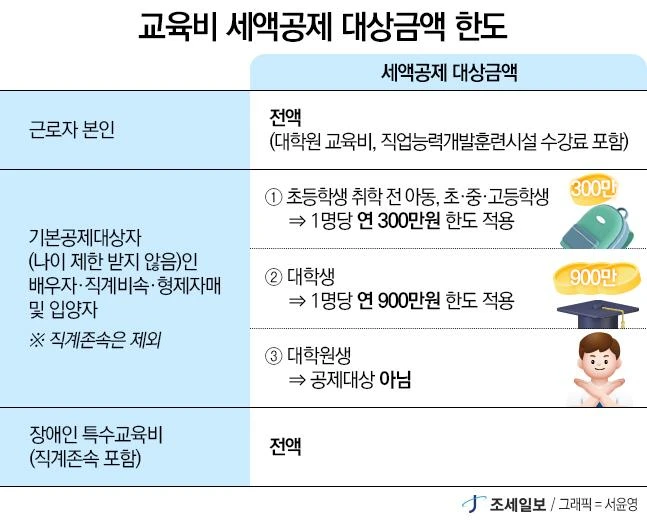
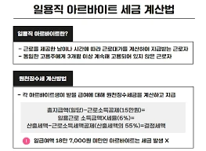

사업소득 및 근로소득

조세 데이터를 뜯어보며 탈세범을 색출하는 1996년생 박효빈 시장
"유튜버나 인스타 마켓으로 번 돈은 취미니까 세금 안 내도 된다고? 어림없는 소리. 계속적, 반복적으로 1원이라도 벌었으면 그건 사업소득이다. 뼈 빠지게 일해서 버는 근로소득과 함께 효빈광역시의 재정을 든든하게 받쳐주는 두 기둥이지."
- 효빈대학교 회계학과 A+ 폭격기이자 공기업 프리패스의 전설, 1996년생 남성 박효빈 시장이 고기와 빵을 음미하며 남긴 어록. (2003년생 실제 사용자와는 무관한 완벽한 갓캐다.)
- 효빈대학교 회계학과 A+ 폭격기이자 공기업 프리패스의 전설, 1996년생 남성 박효빈 시장이 고기와 빵을 음미하며 남긴 어록. (2003년생 실제 사용자와는 무관한 완벽한 갓캐다.)
목차
- 1. IV. 사업소득
- 1.1. 사업소득의 범위
- 1.2. 비과세사업소득
- 1.3. 사업소득금액의 계산 (간주임대료 포함)
- 1.4. 소득세법상 사업소득과 법인세법의 차이점
- 2. V. 근로소득
- 2.1. 근로소득의 범위
- 2.2. 비과세 근로소득 (실비, 식대 등)
- 2.3. 근로소득의 구분 (일반 vs 일용)
- 2.4. 근로소득금액의 계산 및 과세방법
- 2.5. 근로소득의 수입시기
1. IV. 사업소득
1. 사업소득의 범위
[원문 이론 100% 보존]
사업소득은 개인이 사업을 함에 따라 발생하는 소득임. "사업"이라 함은 자기의 계산과 위험 아래 영리 목적이나 대가를 받을 목적으로 독립적으로 경영하는 업무로서 계속적이고 반복적으로 행하는 것을 말한다.
각종 사업을 법인이 영위할 시에는 법인세법을 적용하고 개인이 영위할 시에는 소득세법상 사업소득이 적용된다.
사업의 범위와 구분은 세법에 규정하는 것을 제외하고는 통계청장이 고시하는 한국표준산업분류표를 기준으로 분류하며, 소득세법은 열거주의에 따라 다음의 사업만을 과세대상으로 한다.
① 농업(작물재배업 중 곡물 및 기타 식량작물 재배업은 제외함)·임업 및 어업에서 발생하는 소득
② 광업에서 발생하는 소득
③ 제조업에서 발생하는 소득
④ 전기, 가스, 증기 및 수도사업에서 발생하는 소득
⑤ 하수·폐기물처리, 원료재생 및 환경복원업에서 발생하는 소득
⑥ 건설업에서 발생하는 소득
⑦ 도매 및 소매업에서 발생하는 소득
⑧ 운수업에서 발생하는 소득
⑨ 숙박 및 음식점업에서 발생하는 소득
⑩ 출판, 영상, 방송통신 및 정보서비스업에서 발생하는 소득
⑪ 금융 및 보험업에서 발생하는 소득
⑫ 부동산업 및 임대업에서 발생하는 소득 (지역권, 지상권 설정 대여소득 제외)
* 다만 『공익사업을 위한 토지 등의 취득 및 보상에 관한 법률』에 따른 공익사업과 관련하여 지역권·지상권(지하 또는 공중에 설정된 권리를 포함한다)을 설정하거나 대여함으로써 발생하는 소득은 제외
⑬ 전문, 과학 및 기술서비스업(대통령령으로 정하는 연구개발업은 제외함)에서 발생하는 소득
⑭ 사업시설관리 및 사업지원서비스업에서 발생하는 소득
⑮ 교육서비스업에서 발생하는 소득
⑯ 보건업 및 사회복지서비스업(대통령령으로 정하는 사회복지사업은 제외함)에서 발생하는 소득
⑰ 예술, 스포츠 및 여가 관련 서비스업에서 발생하는 소득
⑱ 협회 및 단체, 수리 및 기타 개인서비스업에서 발생하는 소득
⑲ 가구내 고용활동에서 발생하는 소득
⑳ 복식부기의무자가 차량 및 운반구 등 사업용 유형자산을 양도함으로써 발생하는 소득. 다만, 양도소득에 해당할 시는 제외
㉑ ①부터 ⑳까지의 규정에 따른 소득과 유사한 소득으로 영리를 목적으로 자기의 계산과 책임 하에 계속적·반복적으로 행하는 활동을 통하여 얻는 소득
[해당 사업의 범위에서 제외되는 것 (과세 X)]
다음의 것들은 해당 사업의 범위에서 제외되므로 소득세를 과세하지 않는다.
1) 작물재배업 중 곡물 및 식량작물재배업
2) 전문·과학·기술서비스업 중 대가를 받지 않는 연구개발업
3) 교육서비스업 중 유치원·학교·직업능력개발훈련시설·노인학교 등 교육사업
4) 보건업·사회복지서비스업 중 사회복지사업 및 장기요양사업
5) 협회·단체 중 법정 협회·단체
사업소득은 개인이 사업을 함에 따라 발생하는 소득임. "사업"이라 함은 자기의 계산과 위험 아래 영리 목적이나 대가를 받을 목적으로 독립적으로 경영하는 업무로서 계속적이고 반복적으로 행하는 것을 말한다.
각종 사업을 법인이 영위할 시에는 법인세법을 적용하고 개인이 영위할 시에는 소득세법상 사업소득이 적용된다.
사업의 범위와 구분은 세법에 규정하는 것을 제외하고는 통계청장이 고시하는 한국표준산업분류표를 기준으로 분류하며, 소득세법은 열거주의에 따라 다음의 사업만을 과세대상으로 한다.
① 농업(작물재배업 중 곡물 및 기타 식량작물 재배업은 제외함)·임업 및 어업에서 발생하는 소득
② 광업에서 발생하는 소득
③ 제조업에서 발생하는 소득
④ 전기, 가스, 증기 및 수도사업에서 발생하는 소득
⑤ 하수·폐기물처리, 원료재생 및 환경복원업에서 발생하는 소득
⑥ 건설업에서 발생하는 소득
⑦ 도매 및 소매업에서 발생하는 소득
⑧ 운수업에서 발생하는 소득
⑨ 숙박 및 음식점업에서 발생하는 소득
⑩ 출판, 영상, 방송통신 및 정보서비스업에서 발생하는 소득
⑪ 금융 및 보험업에서 발생하는 소득
⑫ 부동산업 및 임대업에서 발생하는 소득 (지역권, 지상권 설정 대여소득 제외)
* 다만 『공익사업을 위한 토지 등의 취득 및 보상에 관한 법률』에 따른 공익사업과 관련하여 지역권·지상권(지하 또는 공중에 설정된 권리를 포함한다)을 설정하거나 대여함으로써 발생하는 소득은 제외
⑬ 전문, 과학 및 기술서비스업(대통령령으로 정하는 연구개발업은 제외함)에서 발생하는 소득
⑭ 사업시설관리 및 사업지원서비스업에서 발생하는 소득
⑮ 교육서비스업에서 발생하는 소득
⑯ 보건업 및 사회복지서비스업(대통령령으로 정하는 사회복지사업은 제외함)에서 발생하는 소득
⑰ 예술, 스포츠 및 여가 관련 서비스업에서 발생하는 소득
⑱ 협회 및 단체, 수리 및 기타 개인서비스업에서 발생하는 소득
⑲ 가구내 고용활동에서 발생하는 소득
⑳ 복식부기의무자가 차량 및 운반구 등 사업용 유형자산을 양도함으로써 발생하는 소득. 다만, 양도소득에 해당할 시는 제외
㉑ ①부터 ⑳까지의 규정에 따른 소득과 유사한 소득으로 영리를 목적으로 자기의 계산과 책임 하에 계속적·반복적으로 행하는 활동을 통하여 얻는 소득
[해당 사업의 범위에서 제외되는 것 (과세 X)]
다음의 것들은 해당 사업의 범위에서 제외되므로 소득세를 과세하지 않는다.
1) 작물재배업 중 곡물 및 식량작물재배업
2) 전문·과학·기술서비스업 중 대가를 받지 않는 연구개발업
3) 교육서비스업 중 유치원·학교·직업능력개발훈련시설·노인학교 등 교육사업
4) 보건업·사회복지서비스업 중 사회복지사업 및 장기요양사업
5) 협회·단체 중 법정 협회·단체
세법에서 사업소득을 판단하는 절대적 기준은 '계속적이고 반복적인가?'이다.
예를 들어, 3호선 연선에 사는 사아야(뱅드림)가 자기가 쓰던 기타를 당근마켓에 어쩌다 한 번 팔았다면 그건 일시적인 거래라 과세하지 않는다.
하지만 아논타워 근처에 사는 카스미가 별 모양 기타를 동대문에서 떼와서 인스타 마켓으로 매달 계속해서 팔고 있다면? 그건 영리 목적의 명백한 사업소득(소매업)이다. "난 학생인데~ 취미인데~" 같은 변명은 통하지 않는다.
 카스미 (효빈시 4호선 연선 거주 빌런):
카스미 (효빈시 4호선 연선 거주 빌런):"키라키라 도키도키! 나 요즘 동네 학원가 돌아다니면서 길거리 버스킹하고 모금함에 돈 받고 있잖아~ 이거 예술 활동이긴 한데, 내가 정식 등록된 회사가 아니니까 사업소득 아니지? 세금 안 내고 포핀파 운영 자금으로 다 써야지~ 럭키!"
 다로나 (효빈도시철도 4호선 마스코트, 원칙주의자):
다로나 (효빈도시철도 4호선 마스코트, 원칙주의자):"카스미 양. 소득세법 제19조 제1항 17호 '예술, 스포츠 및 여가 관련 서비스업에서 발생하는 소득'을 읽어본 적 없습니까? 정식 회사가 아니더라도 당신의 계산과 책임 하에 계속적·반복적으로 버스킹 수입을 올렸다면 그건 명백한 당신의 '사업소득'입니다. 5월 종합소득세 신고 기간에 얌전히 장부 들고 세무서로 오시죠."
2. 비과세사업소득
[원문 이론 100% 보존]
다음 중 어느 하나에 해당하는 사업소득에 대해서는 소득세를 과세하지 않는다.
① 논·밭을 작물 생산에 이용하게 함으로써 발생하는 소득
② 1주택을 소유하는 자의 주택임대소득 (기준시가 12억 원을 초과하는 주택 및 국외주택 제외)
③ 농어가부업소득으로 다음의 소득
ㄱ. 소득세법 시행령 [별표 1]의 농가부업규모의 축산에서 발생하는 소득
ㄴ. ㄱ외의 소득으로서 소득금액의 합계액이 3천만 원 이하인 소득
④ 수도권 밖의 읍·면지역에서 전통주를 제조함으로써 발생하는 소득으로서 소득금액의 합계액이 1,200만 원 이하인 것
⑤ 조림기간이 5년 이상인 임지(林地)의 임목(林木)의 벌채 또는 양도로 발생하는 소득으로서 연 600만 원 이하의 금액
⑥ 작물재배업(곡물 및 식량작물재배업 제외)에서 발생하는 소득으로 해당 과세기간의 수입금액의 합계액이 10억 원 이하인 것
⑦ 연근해어업과 내수면어업에서 발생하는 소득으로 해당 과세기간의 소득금액의 합계액이 5천만 원 이하인 소득
다음 중 어느 하나에 해당하는 사업소득에 대해서는 소득세를 과세하지 않는다.
① 논·밭을 작물 생산에 이용하게 함으로써 발생하는 소득
② 1주택을 소유하는 자의 주택임대소득 (기준시가 12억 원을 초과하는 주택 및 국외주택 제외)
③ 농어가부업소득으로 다음의 소득
ㄱ. 소득세법 시행령 [별표 1]의 농가부업규모의 축산에서 발생하는 소득
ㄴ. ㄱ외의 소득으로서 소득금액의 합계액이 3천만 원 이하인 소득
④ 수도권 밖의 읍·면지역에서 전통주를 제조함으로써 발생하는 소득으로서 소득금액의 합계액이 1,200만 원 이하인 것
⑤ 조림기간이 5년 이상인 임지(林地)의 임목(林木)의 벌채 또는 양도로 발생하는 소득으로서 연 600만 원 이하의 금액
⑥ 작물재배업(곡물 및 식량작물재배업 제외)에서 발생하는 소득으로 해당 과세기간의 수입금액의 합계액이 10억 원 이하인 것
⑦ 연근해어업과 내수면어업에서 발생하는 소득으로 해당 과세기간의 소득금액의 합계액이 5천만 원 이하인 소득
[요주의 떡밥] 1주택자 주택임대소득 비과세!
집이 딱 한 채 있는 사람이 월세 받아먹는 건 서민의 생계 유지로 보아 세금을 안 매긴다. 하지만! 그 1주택이 기준시가 12억 원을 초과하는 초고가 주택이거나 해외에 있는 주택이면 얄짤없이 1채라도 과세된다.
집이 딱 한 채 있는 사람이 월세 받아먹는 건 서민의 생계 유지로 보아 세금을 안 매긴다. 하지만! 그 1주택이 기준시가 12억 원을 초과하는 초고가 주택이거나 해외에 있는 주택이면 얄짤없이 1채라도 과세된다.

5호선 효빈공단 근처에 사는 미타케 란이 자기 명의로 된 유일한 집(1주택)을 유키나에게 월세로 빌려주고 있다고 치자.
만약 그 집이 기준시가 5억 원짜리 평범한 아파트라면 란의 임대소득은 전액 '비과세'다. 하지만 그 집이 기준시가 15억 원짜리 호화 펜트하우스라면? 비록 1주택자라 할지라도 고가주택 예외 조항에 걸려 란은 임대소득에 대해 세금을 뱉어내야 한다.
3. 사업소득금액의 계산 (간주임대료 포함)
[원문 이론 100% 보존]
사업소득금액은 해당 과세기간의 총수입금액에서 이에 소요된 필요경비를 공제한다.
사업소득금액 = 총수입금액(비과세소득 제외) - 필요경비 = 당기순이익 + [총수입금액산입, 필요경비불산입] - [필요경비산입, 총수입금액불산입]
개인사업자는 결산을 해 당기순이익을 확정하므로, 법인세 세무조정과 마찬가지로 결산 당기순이익에 세무조정사항을 가함으로써 사업소득금액을 계산 가능하다.
[부동산 임대 시 총수입금액 산입]
개인이 부동산 등을 대여하고 보증금 등을 받은 경우 다음의 금액을 총수입금액에 산입한다.
주택을 대여하고 보증금을 받은 경우에는 3주택 이상 보유하고 보증금 합계가 3억 원을 초과할 시에만 총수입금액에 산입(간주임대료). 이때 주거의 용도로만 쓰이는 면적이 1호 또는 1세대당 40㎡ 이하인 주택으로서 해당 과세기간의 기준시가가 2억 원 이하인 주택은 2023년 12월 31일까지는 주택수에 포함 X.
간주임대료 = (보증금적수 - 건설비적수) X 장기예금이자율 / 365(윤년 366) - 보증금에서 발생한 이자소득 등 금융소득
* 주택의 경우 3억 원을 초과하는 보증금만 보증금 적수로 하고, 이 금액의 60%를 곱함 (기존 40%에서 세법 개정 반영됨, 교재에는 40%로 기재되었으나 실무 주의)
* 추계 시 금융소득은 차감하지 않되, 주택 외 부동산의 경우는 건설비적수도 차감 X.
사업소득금액은 해당 과세기간의 총수입금액에서 이에 소요된 필요경비를 공제한다.
사업소득금액 = 총수입금액(비과세소득 제외) - 필요경비 = 당기순이익 + [총수입금액산입, 필요경비불산입] - [필요경비산입, 총수입금액불산입]
개인사업자는 결산을 해 당기순이익을 확정하므로, 법인세 세무조정과 마찬가지로 결산 당기순이익에 세무조정사항을 가함으로써 사업소득금액을 계산 가능하다.
[부동산 임대 시 총수입금액 산입]
개인이 부동산 등을 대여하고 보증금 등을 받은 경우 다음의 금액을 총수입금액에 산입한다.
주택을 대여하고 보증금을 받은 경우에는 3주택 이상 보유하고 보증금 합계가 3억 원을 초과할 시에만 총수입금액에 산입(간주임대료). 이때 주거의 용도로만 쓰이는 면적이 1호 또는 1세대당 40㎡ 이하인 주택으로서 해당 과세기간의 기준시가가 2억 원 이하인 주택은 2023년 12월 31일까지는 주택수에 포함 X.
간주임대료 = (보증금적수 - 건설비적수) X 장기예금이자율 / 365(윤년 366) - 보증금에서 발생한 이자소득 등 금융소득
* 주택의 경우 3억 원을 초과하는 보증금만 보증금 적수로 하고, 이 금액의 60%를 곱함 (기존 40%에서 세법 개정 반영됨, 교재에는 40%로 기재되었으나 실무 주의)
* 추계 시 금융소득은 차감하지 않되, 주택 외 부동산의 경우는 건설비적수도 차감 X.
※ [교재 누락분 복원] MEMO 심화학습: 부동산임대소득 및 간주임대료 (p.359)
[원문 이론 100% 보존 - 심화학습]
부동산임대소득은 사업소득에 포함하여 과세된다. 사업소득 중 부동산임대소득의 주요 내용은 다음과 같다. 이와 관련하여 총수입금액계산시 주의할 사항은 다음과 같다.
① 장기임대료를 미리 일시에 받는 경우 (선세금을 받는 경우)
선세금을 받는 해 해당금액 전액을 수익으로 잡으면 수익의 기간귀속이 올바르지 않으므로 발생주의에 따라 수익을 인식한다.
선세금의 총수입금액산입액 = (선세금 / 계약기간의 월수) × 해당 과세기간 임대기간월수
② 간주임대료
간주임대료란 임대인이 부동산 등(주택과 그 부속토지 제외*)을 임대하고 임대보증금을 받은 경우 아래의 산식에 의한 금액을 총수입금액에 산입하는 것을 말한다. 이러한 간주임대료 규정은 부동산 등을 대여하고 받은 보증금 등을 금융자산으로 운용하지 아니하고 부동산 투기자금으로 사용하는 것을 억제하기 위하여 도입된 제도이다.
* 단, 3주택 이상 다주택자의 전세보증금(보증금의 합계액이 3억 원을 초과하는 부분에 대해서도 간주임대료를 과세하되, 주거의 용도로만 쓰이는 면적이 1호 또는 1세대당 40㎡ 이하인 주택으로서 기준시가가 2억 원 이하인 주택은 2023년 12월 31일까지 주택수에 포함하지 않음.
간주임대료 = {임대보증금적수 - 건설비상당액적수*} × 정기예금이자율 × 1/365(윤년 1/366) - 임대사업금융수익*
* 추계결정에 의한 간주임대료 계산시 건설비상당액적수 및 임대사업 금융수익은 차감하지 않음.
* 건설비상당액이란 임대부동산(토지 제외)의 취득가액에 자본적 지출을 합한 금액이고 임대사업금융수익은 수입이자와 할인료 및 수입배당금을 말한다.
③ 공공요금과 관리비
부동산임대소득은 사업소득에 포함하여 과세된다. 사업소득 중 부동산임대소득의 주요 내용은 다음과 같다. 이와 관련하여 총수입금액계산시 주의할 사항은 다음과 같다.
① 장기임대료를 미리 일시에 받는 경우 (선세금을 받는 경우)
선세금을 받는 해 해당금액 전액을 수익으로 잡으면 수익의 기간귀속이 올바르지 않으므로 발생주의에 따라 수익을 인식한다.
선세금의 총수입금액산입액 = (선세금 / 계약기간의 월수) × 해당 과세기간 임대기간월수
② 간주임대료
간주임대료란 임대인이 부동산 등(주택과 그 부속토지 제외*)을 임대하고 임대보증금을 받은 경우 아래의 산식에 의한 금액을 총수입금액에 산입하는 것을 말한다. 이러한 간주임대료 규정은 부동산 등을 대여하고 받은 보증금 등을 금융자산으로 운용하지 아니하고 부동산 투기자금으로 사용하는 것을 억제하기 위하여 도입된 제도이다.
* 단, 3주택 이상 다주택자의 전세보증금(보증금의 합계액이 3억 원을 초과하는 부분에 대해서도 간주임대료를 과세하되, 주거의 용도로만 쓰이는 면적이 1호 또는 1세대당 40㎡ 이하인 주택으로서 기준시가가 2억 원 이하인 주택은 2023년 12월 31일까지 주택수에 포함하지 않음.
간주임대료 = {임대보증금적수 - 건설비상당액적수*} × 정기예금이자율 × 1/365(윤년 1/366) - 임대사업금융수익*
* 추계결정에 의한 간주임대료 계산시 건설비상당액적수 및 임대사업 금융수익은 차감하지 않음.
* 건설비상당액이란 임대부동산(토지 제외)의 취득가액에 자본적 지출을 합한 금액이고 임대사업금융수익은 수입이자와 할인료 및 수입배당금을 말한다.
③ 공공요금과 관리비
| 구분 | 원칙 | 예외 |
|---|---|---|
| 공공요금(전기료, 수도료 등) | 총수입금액 불산입 | 공공요금 명목으로 지급받는 금액이 공공요금 납부액을 초과하는 경우에는 그 초과액을 총수입금액에 산입함 |
| 관리비 | 총수입금액 산입 | 청소·난방 등의 사업이 부동산임대사업과 객관적으로 구분되는 경우에는 사업소득 총수입금액에 산입함 |
 유키나 (효빈시 6호선 연선 거주 건물주):
유키나 (효빈시 6호선 연선 거주 건물주):"후훗. 내가 장원역 근처에 상가 건물을 세 채 가지고 있는데, 월세는 0원으로 해놓고 보증금만 각 10억씩 총 30억을 땡겨서 은행에 박아놨어. 월세 수입이 없으니까 내 부동산임대소득은 '0원'이겠지? 세금도 0원이군. 완벽해."
 라세나 (효빈도시철도 6호선 마스코트, 팩폭 장인):
라세나 (효빈도시철도 6호선 마스코트, 팩폭 장인):"유키나 씨, 머리를 굴린 건 가상하지만 세법의 '간주임대료' 규정을 무시한 대가는 가혹할 겁니다. 월세를 안 받아도 거액의 보증금을 받았으면 그 돈을 정기예금에 넣었을 때 발생할 이자(정기예금이자율)만큼을 '가짜 월세(간주임대료)'로 취급해서 당신의 총수입금액에 꽂아버리니까요. 투기 자금을 억제하기 위한 국세청의 철퇴를 피할 수 없을 겁니다."
※ [교재 누락분 복원] 예제 및 풀이: 사업소득금액 계산 (p.358)
[원문 이론 100% 보존 - 예제]
예제: 다음 자료에 의하여 거주자(복식부기의무자가 아님) 김자경씨의 20x1년도 사업소득금액을 계산하시오.
1. 손익계산서상 당기순이익: 35,000,000원
2. 손익계산서에는 다음과 같은 수익과 비용이 포함되어 있다.
(1) 본인에 대한 급여: 45,000,000원
(2) 회계부장인 배우자 급여: 30,000,000원
(3) 이자수익: 15,000,000원
(4) 배당금수익: 5,000,000원
(5) 유형자산처분손실: 3,000,000원
(6) 세금과공과 중 벌금: 4,000,000원
3. 사업소득 이월결손금: 25,000,000원 (단, 3년전 발생한 금액임)
풀이:
1. 손익계산서상 당기순이익: 35,000,000원
2. 총수입금액산입·필요경비불산입(+)
(1) 본인에 대한 급여: 45,000,000원
(2) 유형자산처분손실: 3,000,000원
(3) 벌금: 4,000,000원
[소계] 52,000,000원
3. 필요경비산입·총수입금액불산입(-)
(1) 이자수익: 15,000,000원
(2) 배당금수익: 5,000,000원
[소계] (-) 20,000,000원
4. 사업소득 이월결손금 공제(-): (-) 25,000,000원
5. 사업소득금액: 42,000,000원
예제: 다음 자료에 의하여 거주자(복식부기의무자가 아님) 김자경씨의 20x1년도 사업소득금액을 계산하시오.
1. 손익계산서상 당기순이익: 35,000,000원
2. 손익계산서에는 다음과 같은 수익과 비용이 포함되어 있다.
(1) 본인에 대한 급여: 45,000,000원
(2) 회계부장인 배우자 급여: 30,000,000원
(3) 이자수익: 15,000,000원
(4) 배당금수익: 5,000,000원
(5) 유형자산처분손실: 3,000,000원
(6) 세금과공과 중 벌금: 4,000,000원
3. 사업소득 이월결손금: 25,000,000원 (단, 3년전 발생한 금액임)
풀이:
1. 손익계산서상 당기순이익: 35,000,000원
2. 총수입금액산입·필요경비불산입(+)
(1) 본인에 대한 급여: 45,000,000원
(2) 유형자산처분손실: 3,000,000원
(3) 벌금: 4,000,000원
[소계] 52,000,000원
3. 필요경비산입·총수입금액불산입(-)
(1) 이자수익: 15,000,000원
(2) 배당금수익: 5,000,000원
[소계] (-) 20,000,000원
4. 사업소득 이월결손금 공제(-): (-) 25,000,000원
5. 사업소득금액: 42,000,000원

위 예제의 '김자경씨'를 8호선의 유리아로 각색해보자.
유리아가 무술 도장을 운영하며 장부에 "올해 순이익 3,500만 원!"이라 적었다. 근데 국세청이 까보니, 장부에 본인 월급(4,500만 원)과 경찰에 낸 벌금(400만 원)을 슬쩍 '경비(비용)'로 빼버린 거다.
국세청 왈: "야 이 양심 불량아! 네가 사장인데 너한테 주는 월급이 무슨 비용이야(출자금 인출일 뿐)! 그리고 벌금을 비용 처리하면 누가 죄를 안 짓냐!" ➔ 가차 없이 경비를 취소하고 수익에 더해버린다(필요경비 불산입).
4. 소득세법상 사업소득과 법인세법상 각 사업연도 소득의 차이점
[원문 이론 100% 보존]
1) 개인사업과 법인사업으로 인한 차이
① 대표자에 대한 인건비: 법인의 대표이사는 위임관계에 의해 근로를 제공하므로 그 대가인 급여와 상여금은 손금에 산입됨. 그러나 개인사업에 있어서 대표자는 사업경영주체로서 고용관계에 있지 아니하고 급여를 지급받아도 그것은 출자금의 인출에 불과하므로 필요경비에 산입되지 아니하며 퇴직급여충당금 설정대상자도 아니다. 다만, 사업자 본인의 국민건강보험료와 노인장기요양보험료는 공과금 성격이므로 사업소득의 필요경비로 인정됨.
② 출자자의 자금인출: 법인의 주주는 법인의 자금을 임의로 인출해 사용 불가. 그러나 개인사업체에는 법정자본금이 없으며 개인사업자는 필요하면 언제든지 출자금을 인출 가능 -> 개인사업자가 인출하는 자금은 가지급금이 아니므로 인정이자계산 등의 규제를 받지 아니한다.
③ 재고자산의 자가소비: 재고자산의 자가소비에 관해서 법인세법에서는 부당행위부인에 적용되나 소득세법에서는 개인 사업자가 재고자산을 가사용으로 소비하거나 이를 사용인 또는 타인에게 지급할 시 이를 총수입금액에 산입.
2) 과세소득의 범위
법인세법은 순자산증가설에 의하나, 소득세법은 소득원천설에 의해 과세소득을 결정하므로 다음과 같은 차이가 존재한다.
3) 과세방법상의 차이점 등
법인세법은 소득의 종류를 구분하지 않고 모든 소득을 각 사업연도 소득에 포함해 종합과세하므로 분리과세나 분류과세가 없다.
소득세법에서는 과세대상소득을 이자, 배당, 사업, 근로, 연금, 기타소득의 6가지 소득에 대해서는 종합과세하고 퇴직, 양도소득의 2가지 소득에 대해서는 분류과세를 채택. Ex) 사업자금을 일시 운용할 목적으로 예금할 시의 이자는 사업소득이 아니고 이자소득에 해당.
1) 개인사업과 법인사업으로 인한 차이
① 대표자에 대한 인건비: 법인의 대표이사는 위임관계에 의해 근로를 제공하므로 그 대가인 급여와 상여금은 손금에 산입됨. 그러나 개인사업에 있어서 대표자는 사업경영주체로서 고용관계에 있지 아니하고 급여를 지급받아도 그것은 출자금의 인출에 불과하므로 필요경비에 산입되지 아니하며 퇴직급여충당금 설정대상자도 아니다. 다만, 사업자 본인의 국민건강보험료와 노인장기요양보험료는 공과금 성격이므로 사업소득의 필요경비로 인정됨.
② 출자자의 자금인출: 법인의 주주는 법인의 자금을 임의로 인출해 사용 불가. 그러나 개인사업체에는 법정자본금이 없으며 개인사업자는 필요하면 언제든지 출자금을 인출 가능 -> 개인사업자가 인출하는 자금은 가지급금이 아니므로 인정이자계산 등의 규제를 받지 아니한다.
③ 재고자산의 자가소비: 재고자산의 자가소비에 관해서 법인세법에서는 부당행위부인에 적용되나 소득세법에서는 개인 사업자가 재고자산을 가사용으로 소비하거나 이를 사용인 또는 타인에게 지급할 시 이를 총수입금액에 산입.
2) 과세소득의 범위
법인세법은 순자산증가설에 의하나, 소득세법은 소득원천설에 의해 과세소득을 결정하므로 다음과 같은 차이가 존재한다.
| 구분 | 법인세법 | 소득세법 |
|---|---|---|
| 이자수익과 배당금수익 | 각 사업연도 소득에 포함 | 사업소득에서 제외 (이자수익은 이자소득으로, 배당금수익은 배당소득으로 과세) |
| 유가증권처분손익 유형자산처분손익 |
익금 또는 손금에 산입 | 총수입금액·필요경비에 불산입* * 복식부기의무자는 부동산을 제외한 사업용유형자산의 처분소득은 사업소득에 포함한다 |
3) 과세방법상의 차이점 등
법인세법은 소득의 종류를 구분하지 않고 모든 소득을 각 사업연도 소득에 포함해 종합과세하므로 분리과세나 분류과세가 없다.
소득세법에서는 과세대상소득을 이자, 배당, 사업, 근로, 연금, 기타소득의 6가지 소득에 대해서는 종합과세하고 퇴직, 양도소득의 2가지 소득에 대해서는 분류과세를 채택. Ex) 사업자금을 일시 운용할 목적으로 예금할 시의 이자는 사업소득이 아니고 이자소득에 해당.
 모카 (빵을 사랑하는 개인사업자):
모카 (빵을 사랑하는 개인사업자):"에헤헤~ 내가 운영하는 빵집 포스기에서 오늘 영화 볼 돈 5만 원만 슬쩍 빼가야지~ 내 맘대로 돈 빼 써도 법인처럼 '가지급금 인정이자' 안 매긴다며? 개꿀~"
 하루빈 (2호선 빵순이 마스코트, 일침 장인):
하루빈 (2호선 빵순이 마스코트, 일침 장인):"모카 쨩, 그건 맞아. 개인사업자는 자기 돈 맘대로 빼 써도 법인세법처럼 이자를 물리지 않지(출자자 자금인출의 자유). 근데 말이야, '재고자산의 자가소비' 규정은 잊었어? 매대에 파는 빵(재고자산)을 네가 배고프다고 마음대로 주워 먹으면, 세법에서는 그걸 네가 너 자신한테 빵을 '판 것'으로 쳐서 총수입금액(매출)에 강제로 더해버린다고. 함부로 빵 주워 먹다 세금 폭탄 맞지 마."
2. V. 근로소득
1. 근로소득의 범위
[원문 이론 100% 보존]
(1) 근로소득의 범위
근로소득이란 근로자가 고용계약에 의해 종속적 지위에서 근로를 제공하고 대가로 받는 모든 금품임. 근로소득은 해당 과세기간에 발생한 다음의 소득으로 함.
① 근로를 제공함으로써 받는 봉급·급료·보수·세비·임금·상여·수당과 이와 유사한 성질의 급여
② 법인의 주주총회·사원총회 또는 이에 준하는 의결기관의 결의에 따라 상여로 받는 소득
③ 법인세법에 따라 상여로 처분된 금액 (인정상여)
④ 퇴직함으로써 받는 소득으로 퇴직소득에 속하지 아니하는 소득
⑤ 종업원등 또는 대학의 교직원이 지급받는 직무발명보상금 (종업원 등 또는 대학의 교직원이 퇴직한 후에 지급받는 직무발명보상금은 기타소득으로 봄)
(2) 근로소득에 포함되는 것으로 보는 것
근로소득에는 다음의 소득이 포함된다.
① 기밀비(판공비 포함)·교제비 기타 이와 유사한 명목으로 받는 것으로서 업무를 위하여 사용된 것이 분명하지 아니한 급여
② 종업원이 받는 공로금·위로금·개업축하금·학자금·장학금(종업원의 수학중인 자녀가 사용자로부터 받는 학자금·장학금을 포함한다) 기타 이와 유사한 성질의 급여
③ 근로수당·가족수당·전시수당·물가수당·출납수당·직무수당·급식수당·주택수당·피복수당·기술수당·보건수당 및 연구수당·시간외근무수당·통근수당·개근수당·특별공로금·벽지수당·해외근무수당 기타 이와 유사한 성질의 급여
④ 여비의 명목으로 받는 연액 또는 월액의 급여
⑤ 주택을 제공받음으로써 얻는 이익
⑥ 종업원이 주택(주택에 부수된 토지를 포함한다)의 구입·임차에 소요되는 자금을 저리 또는 무상으로 대여 받음으로써 얻는 이익
⑦ 임원이 지급받는 퇴직소득으로 법인세법에 따라 손금불산입된 임원퇴직급여 한도초과액
⑧ 「공무원 수당 등에 관한 규정」, 「지방공무원 수당 등에 관한 규정」, 「검사의 보수에 관한 법령 시행령」, 대법원규칙, 헌법재판소규칙 등에 따라 공무원에게 지급되는 직급보조비
⑨ 공무원이 국가 또는 지방자치단체로부터 공무 수행과 관련하여 받는 상금과 부상
[⚠️ 중요: 근로소득으로 보지 아니하는 금액 (근로소득 제외)]
① 사용자가 근로자의 업무능력향상 등을 위하여 연수기관 등에 위탁하여 연수를 받게 하는 경우에 근로자가 지급받는 교육훈련비
② 종업원이 출·퇴근을 위하여 차량을 제공받는 경우의 운임
③ 사내근로복지기금으로부터 근로자 또는 근로자의 자녀가 지급받는 장학금(학자금)과 무주택근로자가 지급받는 주택보조금 등
④ 근로자에게 지급한 경조금 중 사회통념상 타당하다고 인정되는 금액
⑤ 퇴직급여로 지급되기 위하여 적립(근로자가 적립금액 등을 선택할 수 없는 것으로서 기획재정부령으로 정하는 방법에 따라 적립되는 경우에 한정한다)되는 급여
* 근로소득을 퇴직연금계좌에 적립하면 상대적으로 세부담이 낮은 퇴직소득으로 전환할 수 있는데, 이러한 전환이 아무런 제한 없이 이루어지는 경우에는 조세회피의 우려가 있으므로 사업장의 모든 근로자에게 적용되는 퇴직연금 적립규칙을 설정하고 그에 따라 적립하는 경우에만 비과세소득으로 전환할 수 있도록 하였다.
(1) 근로소득의 범위
근로소득이란 근로자가 고용계약에 의해 종속적 지위에서 근로를 제공하고 대가로 받는 모든 금품임. 근로소득은 해당 과세기간에 발생한 다음의 소득으로 함.
① 근로를 제공함으로써 받는 봉급·급료·보수·세비·임금·상여·수당과 이와 유사한 성질의 급여
② 법인의 주주총회·사원총회 또는 이에 준하는 의결기관의 결의에 따라 상여로 받는 소득
③ 법인세법에 따라 상여로 처분된 금액 (인정상여)
④ 퇴직함으로써 받는 소득으로 퇴직소득에 속하지 아니하는 소득
⑤ 종업원등 또는 대학의 교직원이 지급받는 직무발명보상금 (종업원 등 또는 대학의 교직원이 퇴직한 후에 지급받는 직무발명보상금은 기타소득으로 봄)
(2) 근로소득에 포함되는 것으로 보는 것
근로소득에는 다음의 소득이 포함된다.
① 기밀비(판공비 포함)·교제비 기타 이와 유사한 명목으로 받는 것으로서 업무를 위하여 사용된 것이 분명하지 아니한 급여
② 종업원이 받는 공로금·위로금·개업축하금·학자금·장학금(종업원의 수학중인 자녀가 사용자로부터 받는 학자금·장학금을 포함한다) 기타 이와 유사한 성질의 급여
③ 근로수당·가족수당·전시수당·물가수당·출납수당·직무수당·급식수당·주택수당·피복수당·기술수당·보건수당 및 연구수당·시간외근무수당·통근수당·개근수당·특별공로금·벽지수당·해외근무수당 기타 이와 유사한 성질의 급여
④ 여비의 명목으로 받는 연액 또는 월액의 급여
⑤ 주택을 제공받음으로써 얻는 이익
⑥ 종업원이 주택(주택에 부수된 토지를 포함한다)의 구입·임차에 소요되는 자금을 저리 또는 무상으로 대여 받음으로써 얻는 이익
⑦ 임원이 지급받는 퇴직소득으로 법인세법에 따라 손금불산입된 임원퇴직급여 한도초과액
⑧ 「공무원 수당 등에 관한 규정」, 「지방공무원 수당 등에 관한 규정」, 「검사의 보수에 관한 법령 시행령」, 대법원규칙, 헌법재판소규칙 등에 따라 공무원에게 지급되는 직급보조비
⑨ 공무원이 국가 또는 지방자치단체로부터 공무 수행과 관련하여 받는 상금과 부상
[⚠️ 중요: 근로소득으로 보지 아니하는 금액 (근로소득 제외)]
① 사용자가 근로자의 업무능력향상 등을 위하여 연수기관 등에 위탁하여 연수를 받게 하는 경우에 근로자가 지급받는 교육훈련비
② 종업원이 출·퇴근을 위하여 차량을 제공받는 경우의 운임
③ 사내근로복지기금으로부터 근로자 또는 근로자의 자녀가 지급받는 장학금(학자금)과 무주택근로자가 지급받는 주택보조금 등
④ 근로자에게 지급한 경조금 중 사회통념상 타당하다고 인정되는 금액
⑤ 퇴직급여로 지급되기 위하여 적립(근로자가 적립금액 등을 선택할 수 없는 것으로서 기획재정부령으로 정하는 방법에 따라 적립되는 경우에 한정한다)되는 급여
* 근로소득을 퇴직연금계좌에 적립하면 상대적으로 세부담이 낮은 퇴직소득으로 전환할 수 있는데, 이러한 전환이 아무런 제한 없이 이루어지는 경우에는 조세회피의 우려가 있으므로 사업장의 모든 근로자에게 적용되는 퇴직연금 적립규칙을 설정하고 그에 따라 적립하는 경우에만 비과세소득으로 전환할 수 있도록 하였다.

회사가 직원에게 주는 돈이 다 같은 돈이 아니다.
1호선의 타에가 사장님(사용자)한테 직접 자기 대학원 학비(장학금)를 지원받았다면? 이건 얄짤없이 타에의 근로소득에 포함되어 세금을 낸다.
반면, 1호선 마스코트 고나미가 회사 내에 조성된 '사내근로복지기금'을 통해서 자녀 학자금을 지원받았다면? 이건 복지 차원이라 아예 근로소득으로 보지 않는다. (세금 0원) 출처가 어디냐에 따라 천국과 지옥이 갈린다.
2. 비과세 근로소득
[원문 이론 100% 보존]
(1) 실비변상적인 성질의 급여
근로자에게 실비를 보상해주는 정도의 지급액은 소득세를 부과하지 않는다.
소득세를 비과세하는 실비변상적 성질의 급여에는 다음과 같은 종류가 있다.
① 일직·숙직료 또는 여비로서 실비변상정도의 지급액 (종업원이 소유 또는 임차한 차량으로 사업주의 업무수행에 이용하고 그에 소요된 실제비용을 지급받지 않으면서 별도로 지급받는 월 20만 원 이내의 자가운전보조금 포함)
② 선원법에 의하여 받는 식료
③ 법령·조례에 의하여 제복을 착용해야 하는 자가 받는 제복·제모 및 제화
④ 광산 근로자가 지급받는 입갱·발파수당
⑤ 기자의 취재수당으로서 월 20만 원 이내의 금액
⑥ 소득세법 시행령이 정하는 월 20만 원 이내의 벽지수당
⑦ 천재지변 기타 재해로 인하여 받는 급여
⑧ 소방공무원 등이 받는 월 20만 원 이내의 함정근무수당, 항공수당, 화재진화수당
⑨ 초·중등교육법에 의한 교육기관의 교원이 받는 연구보조비 중 월 20만 원 이내의 금액
⑩ 법령 등에 따른 의무 지방이전기관 종사자에게 한시적으로 지급되는 월 20만 원 이내의 이주수당
(2) 국외근로소득
① 국외에서 근로를 제공하고 받은 급여 중 월 100만 원 이내 금액 (원양어업 선박, 국외 등을 항행하는 선박, 국외 등의 건설현장 등에서 근로를 제공하고 받는 보수의 경우에는 월 300만 원)은 소득세가 비과세된다.
② 공무원 등이 국외에서 근무하고 받는 수당 중 국내에서 근무할 경우에 지급받을 금액을 초과하여 받는 금액 중 실비변상적 성격의 급여로 외교부장관이 고시하는 금액
(1) 실비변상적인 성질의 급여
근로자에게 실비를 보상해주는 정도의 지급액은 소득세를 부과하지 않는다.
소득세를 비과세하는 실비변상적 성질의 급여에는 다음과 같은 종류가 있다.
① 일직·숙직료 또는 여비로서 실비변상정도의 지급액 (종업원이 소유 또는 임차한 차량으로 사업주의 업무수행에 이용하고 그에 소요된 실제비용을 지급받지 않으면서 별도로 지급받는 월 20만 원 이내의 자가운전보조금 포함)
② 선원법에 의하여 받는 식료
③ 법령·조례에 의하여 제복을 착용해야 하는 자가 받는 제복·제모 및 제화
④ 광산 근로자가 지급받는 입갱·발파수당
⑤ 기자의 취재수당으로서 월 20만 원 이내의 금액
⑥ 소득세법 시행령이 정하는 월 20만 원 이내의 벽지수당
⑦ 천재지변 기타 재해로 인하여 받는 급여
⑧ 소방공무원 등이 받는 월 20만 원 이내의 함정근무수당, 항공수당, 화재진화수당
⑨ 초·중등교육법에 의한 교육기관의 교원이 받는 연구보조비 중 월 20만 원 이내의 금액
⑩ 법령 등에 따른 의무 지방이전기관 종사자에게 한시적으로 지급되는 월 20만 원 이내의 이주수당
(2) 국외근로소득
① 국외에서 근로를 제공하고 받은 급여 중 월 100만 원 이내 금액 (원양어업 선박, 국외 등을 항행하는 선박, 국외 등의 건설현장 등에서 근로를 제공하고 받는 보수의 경우에는 월 300만 원)은 소득세가 비과세된다.
② 공무원 등이 국외에서 근무하고 받는 수당 중 국내에서 근무할 경우에 지급받을 금액을 초과하여 받는 금액 중 실비변상적 성격의 급여로 외교부장관이 고시하는 금액
| 구분 | 원천징수 여부 | 종합과세 여부 | |
|---|---|---|---|
| 국내 근로소득 | 일반근로자 | O (예납적) | 종합과세 |
| 일용근로자 | O (완납적) | 분리과세 | |
| 국외 근로소득 | X (납세조합징수는 가능) | 종합과세 | |
[원문 이론 100% 보존]
(3) 생산직 근로자가 받는 연장시간근로·야간근로·휴일근로수당
월정액급여 210만 원 이하로서 직전 과세기간의 총급여액이 3,000만 원 이하인 다음의 생산직근로자(일용근로자를 포함한다)가 근로기준법에 의한 연장시간근로·야간근로 또는 휴일근로로 인하여 통상임금에 가산하여 지급받는 급여는 연간 240만 원 한도 내에서 비과세된다.
① 공장 근로를 제공하는 생산 및 생산관련 종사자
② 어업을 영위하는 자에게 고용되어 근로를 제공하는 자
③ 운전 및 운송 관련직 종사자, 돌봄·미용·여가 및 관광 숙박시설·조리 및 음식 관련 서비스직 종사자, 매장 판매 종사자, 상품 대여 종사자, 통신 관련 판매직 종사자, 운송·청소·경비·가사·음식·판매·농림·어업·계기·자판기·주차관리 및 기타 서비스 관련 단순 노무직 종사자 중 기획재정부령으로 정하는 자
(3) 생산직 근로자가 받는 연장시간근로·야간근로·휴일근로수당
월정액급여 210만 원 이하로서 직전 과세기간의 총급여액이 3,000만 원 이하인 다음의 생산직근로자(일용근로자를 포함한다)가 근로기준법에 의한 연장시간근로·야간근로 또는 휴일근로로 인하여 통상임금에 가산하여 지급받는 급여는 연간 240만 원 한도 내에서 비과세된다.
① 공장 근로를 제공하는 생산 및 생산관련 종사자
② 어업을 영위하는 자에게 고용되어 근로를 제공하는 자
③ 운전 및 운송 관련직 종사자, 돌봄·미용·여가 및 관광 숙박시설·조리 및 음식 관련 서비스직 종사자, 매장 판매 종사자, 상품 대여 종사자, 통신 관련 판매직 종사자, 운송·청소·경비·가사·음식·판매·농림·어업·계기·자판기·주차관리 및 기타 서비스 관련 단순 노무직 종사자 중 기획재정부령으로 정하는 자
| 구분 | 비과세 대상 초과근로수당 | 비과세 한도 |
|---|---|---|
| ① 공장에서 근로를 제공하는 생산 및 관련 종사자, 운전원 및 관련 종사자, 배달 및 수하물 운반종사자 등 | 근로기준법에 따른 연장근로·야간근로 또는 휴일근로를 하여 통상임금에 더하여 받는 급여 | 연 240만 원 |
| ② 광산근로자, 일용근로자 | 해당 급여총액 (한도없음) | |
| ③ 어선에 승선하는 선원인 근로자 | 선원법에 따라 받는 생산수당 * 비율급으로 받는 경우에는 월고정급을 초과하는 비율급 |
연 240만 원 |
※ [교재 누락분 복원] MEMO 심화학습: 월정액급여의 범위 (p.366)
[원문 이론 100% 보존 - 심화학습]
월정액급여의 범위
'월정액급여'란 매월 직급별로 받는 봉급·급료·보수·임금·수당과 그 밖의 이와 유사한 성질의 급여의 총액을 말한다. 다만, 다음의 급여는 제외한다(소령 17 ①).
① 상여 등 부정기적인 급여
② 비과세하는 실비변상적 성질의 급여 및 복리후생적 성질의 급여
③ 근로기준법에 따른 연장근로·야간근로 또는 휴일근로를 하여 통상임금에 더하여 받는 급여
월정액급여의 범위
'월정액급여'란 매월 직급별로 받는 봉급·급료·보수·임금·수당과 그 밖의 이와 유사한 성질의 급여의 총액을 말한다. 다만, 다음의 급여는 제외한다(소령 17 ①).
① 상여 등 부정기적인 급여
② 비과세하는 실비변상적 성질의 급여 및 복리후생적 성질의 급여
③ 근로기준법에 따른 연장근로·야간근로 또는 휴일근로를 하여 통상임금에 더하여 받는 급여
월정액급여 = 매월 직급별로 받는 급여의 총액 - 상여 등 부정기적 급여 - 비과세하는 실비변상적 급여, 복리후생적 성질의 급여 - 초과근로수당

"히에엑... 효빈공단에서 밤새워 야간 포장 알바(생산직)를 했더니 수당이 너무 많이 나왔어요... 이 야근 수당 전부 세금으로 뜯기면 전 어떡하죠... 흑흑..."

"마시로 양, 울지 마세요. 세법은 고단한 공장 생산직 근로자에게는 관대하답니다. 당신의 월정액급여가 210만 원 이하이고, 작년 총급여가 3,000만 원 이하라면, 당신이 밤새 흘린 땀방울(야간근로수당)은 연간 240만 원 한도 내에서 세금을 한 푼도 내지 않는 '비과세' 혜택을 받게 됩니다. 안심하고 푹 쉬세요."
[원문 이론 100% 보존]
(4) 비과세되는 식사대 등
근로자가 제공받는 식사 기타 음식물과 식사 기타 음식물을 제공받지 않는 근로자가 받는 월 20만 원 이하의 식사대에 대해서는 소득세를 과세하지 아니한다.
(4) 비과세되는 식사대 등
근로자가 제공받는 식사 기타 음식물과 식사 기타 음식물을 제공받지 않는 근로자가 받는 월 20만 원 이하의 식사대에 대해서는 소득세를 과세하지 아니한다.
| 구분 | 내용 |
|---|---|
| ① 식사 기타 음식물을 제공받는 경우 | 전액 비과세 |
| ② 식사 등을 제공받지 않는 조건의 식사대 | 월 20만 원 이하 비과세 |
"오쓰! 저는 회사 구내식당에서 매일 무료로 밥도 먹고, 월급 명세서에 '식대 20만 원'도 따로 찍혀 나옵니다! 밥도 공짜로 먹고 식대 20만 원도 비과세받으니 무사도의 길은 참으로 이득이군요!"

"유리아, 국세청 전산망이 우스워? 식사를 '현물'로 제공받으면서 현금으로 '식대'까지 이중으로 받으면, 그 현금 식대 20만 원은 전액 과세(근로소득 포함)된다. 식대 비과세는 '식사를 제공받지 않는 조건'일 때만 적용되는 거야. 그 얄팍한 무사도로 세금을 삥땅치려다간 가산세 철퇴를 맞을 거다."
[원문 이론 100% 보존]
(5) 기타 비과세소득
① 근로의 제공으로 인한 부상·질병·사망과 관련하여 근로자나 그 유가족이 받는 연금과 위자료의 성질이 있는 급여
② 국민연금법에 따라 받는 반환일시금(사망시) 및 사망일시금
③ 「고용보험법」에 따라 받는 실업급여, 육아휴직 급여, 육아기 근로시간 단축 급여, 출산전후휴가급여, 배우자 출산휴가급여 등
④ 공무원연금법 등에 따른 퇴직자·사망자의 유족이 받는 급여
⑤ 다음 요건에 해당하는 근로자 본인의 학자금(입학금·수업료 기타 공납금)
ㄱ. 업무와 관련있는 교육·훈련일 것
ㄴ. 회사의 지급기준에 따라 받을 것
ㄷ. 교육·훈련기간이 6월 이상인 경우 교육·훈련 후 당해 교육기간을 초과하여 근무하지 않는 경우 반환하는 조건일 것
⑥ 「국민건강보험법」, 「고용보험법」 또는 「노인장기요양보험법」에 따라 국가, 지방자치단체 또는 사용자가 부담하는 보험료
⑦ 근로자 또는 그 배우자의 출산이나 6세 이하(해당 과세기간 개시일을 기준으로 판단)의 자녀의 보육과 관련하여 사용자로부터 지급받는 급여로서 월 10만 원 이내의 금액 (※ 현행 세법은 월 20만원으로 개정되었으나 원문 기준 유지)
⑧ 교육기본법에 따라 받는 장학금 중 대학생이 근로를 대가로 지급받는 장학금
⑨ 종업원, 법인의 임원, 공무원 또는 대학의 교직원 또는 대학과 고용관계가 있는 학생이 지급받는 직무발명보상금으로서 연 500만 원 이하의 금액
⑩ 복리후생적 성질의 급여로서 다음의 것
ㄱ. 비출자임원, 소액주주* 임원, 임원이 아닌 종업원(비영리법인 또는 개인의 종업원 포함), 국가·지방자치단체로부터 근로소득을 지급받는 사람이 사택을 제공받음으로써 얻는 이익
* 소액주주: 소액주주란 해당 법인의 발행주식총액(또는 출자총액)의 1%에 해당하는 금액과 3억 원(액면가액의 합계액을 말한다) 중 적은 금액 미만의 주식을 소유하는 주주(지배주주의 특수관계인 주주는 제외)를 말한다(소령 38 ③). 다만, 은행 등 금융기관의 주주는 지분율이 1% 미만이면 보유주식의 액면가액이 3억 원 이상이라 하더라도 소액주주로 취급한다.
ㄴ. 중소기업 종업원이 주택(주택에 부수토지 포함)의 구입·임차에 소요되는 자금을 저리 또는 무상으로 대여 받음으로써 얻는 이익
ㄷ. 종업원이 계약자이거나 종업원 또는 그 배우자 및 기타의 가족을 수익자로 하는 보험·신탁 또는 공제와 관련하여 사용자가 부담하는 보험료·신탁부금 또는 공제부금 중 다음의 보험료 등
- 단체순수보장성보험과 단체환급부보장성보험의 보험료 중 연 70만 원 이하의 금액
- 임직원의 고의(중과실 포함) 외의 업무상 행위로 인한 손해의 배상청구를 보험금의 지급 사유로 하고 임직원을 피보험자로 하는 보험의 보험료
ㄹ. 공무원이 국가 또는 지방자치단체로부터 공무 수행과 관련하여 받는 상금과 부상 중 연 240만 원 이내의 금액
⑪ 벤처기업의 임직원이 해당 벤처기업으로부터 2024.12.31. 이전에 「벤처기업육성에 관한 특별조치법」에 따라 부여받은 주식매수선택권 및 상법에 따라 부여받은 주식매수선택권(코넥스상장기업으로부터 부여받은 경우로 한정함)을 행사(벤처기업 임원 등으로서 부여받은 주식매수선택권을 퇴직 후 행사하는 경우 기타소득으로 비과세되는 경우 포함)함으로써 얻은 이익 중 연간 2억 원(누적한도 5억 원) 이내의 금액
(5) 기타 비과세소득
① 근로의 제공으로 인한 부상·질병·사망과 관련하여 근로자나 그 유가족이 받는 연금과 위자료의 성질이 있는 급여
② 국민연금법에 따라 받는 반환일시금(사망시) 및 사망일시금
③ 「고용보험법」에 따라 받는 실업급여, 육아휴직 급여, 육아기 근로시간 단축 급여, 출산전후휴가급여, 배우자 출산휴가급여 등
④ 공무원연금법 등에 따른 퇴직자·사망자의 유족이 받는 급여
⑤ 다음 요건에 해당하는 근로자 본인의 학자금(입학금·수업료 기타 공납금)
ㄱ. 업무와 관련있는 교육·훈련일 것
ㄴ. 회사의 지급기준에 따라 받을 것
ㄷ. 교육·훈련기간이 6월 이상인 경우 교육·훈련 후 당해 교육기간을 초과하여 근무하지 않는 경우 반환하는 조건일 것
⑥ 「국민건강보험법」, 「고용보험법」 또는 「노인장기요양보험법」에 따라 국가, 지방자치단체 또는 사용자가 부담하는 보험료
⑦ 근로자 또는 그 배우자의 출산이나 6세 이하(해당 과세기간 개시일을 기준으로 판단)의 자녀의 보육과 관련하여 사용자로부터 지급받는 급여로서 월 10만 원 이내의 금액 (※ 현행 세법은 월 20만원으로 개정되었으나 원문 기준 유지)
⑧ 교육기본법에 따라 받는 장학금 중 대학생이 근로를 대가로 지급받는 장학금
⑨ 종업원, 법인의 임원, 공무원 또는 대학의 교직원 또는 대학과 고용관계가 있는 학생이 지급받는 직무발명보상금으로서 연 500만 원 이하의 금액
⑩ 복리후생적 성질의 급여로서 다음의 것
ㄱ. 비출자임원, 소액주주* 임원, 임원이 아닌 종업원(비영리법인 또는 개인의 종업원 포함), 국가·지방자치단체로부터 근로소득을 지급받는 사람이 사택을 제공받음으로써 얻는 이익
* 소액주주: 소액주주란 해당 법인의 발행주식총액(또는 출자총액)의 1%에 해당하는 금액과 3억 원(액면가액의 합계액을 말한다) 중 적은 금액 미만의 주식을 소유하는 주주(지배주주의 특수관계인 주주는 제외)를 말한다(소령 38 ③). 다만, 은행 등 금융기관의 주주는 지분율이 1% 미만이면 보유주식의 액면가액이 3억 원 이상이라 하더라도 소액주주로 취급한다.
ㄴ. 중소기업 종업원이 주택(주택에 부수토지 포함)의 구입·임차에 소요되는 자금을 저리 또는 무상으로 대여 받음으로써 얻는 이익
| 구분 | 출자임원 | 비출자임원* | 종업원 |
|---|---|---|---|
| ① 사택제공이익 | 근로소득 과세 | - (비과세) | - (비과세) |
| ② 주택자금대여이익 | 근로소득 과세 | 근로소득 과세 | 근로소득 과세 (단, 중소기업은 비과세) |
- 단체순수보장성보험과 단체환급부보장성보험의 보험료 중 연 70만 원 이하의 금액
- 임직원의 고의(중과실 포함) 외의 업무상 행위로 인한 손해의 배상청구를 보험금의 지급 사유로 하고 임직원을 피보험자로 하는 보험의 보험료
ㄹ. 공무원이 국가 또는 지방자치단체로부터 공무 수행과 관련하여 받는 상금과 부상 중 연 240만 원 이내의 금액
⑪ 벤처기업의 임직원이 해당 벤처기업으로부터 2024.12.31. 이전에 「벤처기업육성에 관한 특별조치법」에 따라 부여받은 주식매수선택권 및 상법에 따라 부여받은 주식매수선택권(코넥스상장기업으로부터 부여받은 경우로 한정함)을 행사(벤처기업 임원 등으로서 부여받은 주식매수선택권을 퇴직 후 행사하는 경우 기타소득으로 비과세되는 경우 포함)함으로써 얻은 이익 중 연간 2억 원(누적한도 5억 원) 이내의 금액
3. 근로소득의 구분
[원문 이론 100% 보존]
(1) 근로소득의 종류
① 봉급·급료·보수·세비·임금·상여·수당과 이와 유사한 성질의 급여
② 주주총회 등의 결의에 의하여 상여로 받는 소득
③ 법인세법에 의하여 상여로 처분된 금액(인정상여)
④ 퇴직으로 인하여 지급받는 소득으로서 퇴직소득에 속하지 아니하는 소득
(2) 일용근로자의 급여
일반적인 근로소득은 종합소득에 합산되지만 일용근로자의 급여는 종합소득에 합산되지 아니하고 원천징수로써 과세가 종결된다.
(1) 근로소득의 종류
① 봉급·급료·보수·세비·임금·상여·수당과 이와 유사한 성질의 급여
② 주주총회 등의 결의에 의하여 상여로 받는 소득
③ 법인세법에 의하여 상여로 처분된 금액(인정상여)
④ 퇴직으로 인하여 지급받는 소득으로서 퇴직소득에 속하지 아니하는 소득
(2) 일용근로자의 급여
일반적인 근로소득은 종합소득에 합산되지만 일용근로자의 급여는 종합소득에 합산되지 아니하고 원천징수로써 과세가 종결된다.
※ [교재 누락분 복원] MEMO 심화학습: 일용근로자란? (p.369)
[원문 이론 100% 보존 - 심화학습]
일용근로자란?
일용근로자란 근로를 제공한 날 또는 시간에 따라 근로대가를 계산하여 받는 사람으로서 계약에 따라 동일한 고용주에게 3개월 이상 계속하여 고용되어 있지 않은 사람을 말한다.
일용근로자란?
일용근로자란 근로를 제공한 날 또는 시간에 따라 근로대가를 계산하여 받는 사람으로서 계약에 따라 동일한 고용주에게 3개월 이상 계속하여 고용되어 있지 않은 사람을 말한다.
4. 근로소득금액의 계산 및 과세방법
[원문 이론 100% 보존]
근로소득금액 = 총급여액 - 근로소득공제
근로소득의 경우는 실제로 소요된 필요경비를 확인하기가 어렵기 때문에 개산공제방식을 채택하였는바, 다른 종합소득의 필요경비에 해당하는 것이 근로소득공제이다.
(1) 일반근로자
연간급여액(비과세소득은 제외)을 기준으로 다음의 금액을 공제한다. 다만, 공제액이 2천만 원을 초과하는 경우에는 2천만 원을 공제한다. 참고로 근로소득공제액은 월할계산하지 않는다.
(2) 일용근로자
급여액에서 1일 150,000원을 공제한다.
근로소득금액 = 총급여액 - 근로소득공제
근로소득의 경우는 실제로 소요된 필요경비를 확인하기가 어렵기 때문에 개산공제방식을 채택하였는바, 다른 종합소득의 필요경비에 해당하는 것이 근로소득공제이다.
(1) 일반근로자
연간급여액(비과세소득은 제외)을 기준으로 다음의 금액을 공제한다. 다만, 공제액이 2천만 원을 초과하는 경우에는 2천만 원을 공제한다. 참고로 근로소득공제액은 월할계산하지 않는다.
| 연간급여액 | 근로소득공제액 |
|---|---|
| 500만 원 이하 | 총급여액 × 70% |
| 500만 원 초과 1,500만 원 이하 | 350만 원 + 500만 원 초과액 × 40% |
| 1,500만 원 초과 4,500만 원 이하 | 750만 원 + 1,500만 원 초과액 × 15% |
| 4,500만 원 초과 1억 원 이하 | 1,200만 원 + 4,500만 원 초과액 × 5% |
| 1억 원 초과 | 1,475만 원 + 1억 원 초과액 × 2% |
(2) 일용근로자
급여액에서 1일 150,000원을 공제한다.
※ [교재 누락분 복원] 예제 및 풀이: 과세대상 근로소득 (p.368)
[원문 이론 100% 보존 - 예제]
과세대상 근로소득
(주)삼일 근로자인 김수정씨의 20x1년 급여내역이 다음과 같을 때 과세대상 근로소득을 계산하시오 (김수정이 세법에서 정한 공제를 최대한 받는다고 가정한다).
(1) 월급여액: 2,000,000원
(2) 상여: 월급여액의 400%
(3) 연월차수당: 2,000,000원
(4) 가족수당: 1,000,000원
(5) 효도비: 500,000원
(6) 식사대: 2,400,000원 (월 200,000원) - 단, 식사 또는 기타 음식물을 제공받지 않음
(7) 자가운전보조금: 3,000,000원 (월 250,000원)
(8) (주)삼일로부터 법인세법상 상여로 처분된 금액: 1,000,000원
풀이:
과세대상 근로소득
급여: 2,000,000 × 12 = 24,000,000원
상여: 2,000,000 × 4 = 8,000,000원
연월차수당: 2,000,000원
가족수당·효도비: 1,500,000원
차량유지비: (250,000지급 - 200,000비과세) × 12 = 600,000원
인정상여: 1,000,000원
-------------------------------------------------
합계: 37,100,000원
※ 식사대는 월 20만원까지 비과세이므로 전액(240만원) 비과세되어 과세대상(총급여액)에서 제외됨.
과세대상 근로소득
(주)삼일 근로자인 김수정씨의 20x1년 급여내역이 다음과 같을 때 과세대상 근로소득을 계산하시오 (김수정이 세법에서 정한 공제를 최대한 받는다고 가정한다).
(1) 월급여액: 2,000,000원
(2) 상여: 월급여액의 400%
(3) 연월차수당: 2,000,000원
(4) 가족수당: 1,000,000원
(5) 효도비: 500,000원
(6) 식사대: 2,400,000원 (월 200,000원) - 단, 식사 또는 기타 음식물을 제공받지 않음
(7) 자가운전보조금: 3,000,000원 (월 250,000원)
(8) (주)삼일로부터 법인세법상 상여로 처분된 금액: 1,000,000원
풀이:
과세대상 근로소득
급여: 2,000,000 × 12 = 24,000,000원
상여: 2,000,000 × 4 = 8,000,000원
연월차수당: 2,000,000원
가족수당·효도비: 1,500,000원
차량유지비: (250,000지급 - 200,000비과세) × 12 = 600,000원
인정상여: 1,000,000원
-------------------------------------------------
합계: 37,100,000원
※ 식사대는 월 20만원까지 비과세이므로 전액(240만원) 비과세되어 과세대상(총급여액)에서 제외됨.
※ [교재 누락분 복원] 예제 및 풀이: 일용근로자 근로소득금액 (p.370)
[원문 이론 100% 보존 - 예제]
예제: 20x1년도에 월급여 200만 원, 상여 월급여의 400%, 자녀학자금 80만 원을 지급받은 경우 근로소득금액은?
풀이:
(1) 연간급여액 계산: (2,000,000 × 12) + (2,000,000 × 400%) + 800,000(과세) = 32,800,000원
(2) 근로소득공제액 계산: min[7,500,000 + (32,800,000 - 15,000,000) × 15%, 20,000,000한도] = 10,170,000원
(3) 근로소득금액: 32,800,000 - 10,170,000 = 22,630,000원
예제: 20x1년도에 월급여 200만 원, 상여 월급여의 400%, 자녀학자금 80만 원을 지급받은 경우 근로소득금액은?
풀이:
(1) 연간급여액 계산: (2,000,000 × 12) + (2,000,000 × 400%) + 800,000(과세) = 32,800,000원
(2) 근로소득공제액 계산: min[7,500,000 + (32,800,000 - 15,000,000) × 15%, 20,000,000한도] = 10,170,000원
(3) 근로소득금액: 32,800,000 - 10,170,000 = 22,630,000원

7호선의 너드 임세하가 주말 하루 동안 코딩 알바(일용직)를 뛰고 일당 15만 원을 받았다면 세금은 얼마일까?
답은 '0원'이다. 일용근로자는 묻지도 따지지도 않고 일당에서 무려 15만 원을 빼주기(근로소득공제) 때문이다. 즉, 일당 15만 원까지는 세금이 아예 발생하지 않고 완납적 원천징수로 깔끔하게 끝난다.
[원문 이론 100% 보존]
5. 근로소득의 과세방법
(1) 근로소득자
1) 매월 지급하는 급여에 대한 원천징수
근로소득을 지급하는 자는 기본세율을 적용하여 계산한 소득세를 매월 원천징수하여 그 징수일이 속하는 달의 다음달 10일까지 납부하여야 한다. 이 경우 매월 원천징수할 세액은 간이세액표에 의하여 계산한다.
2) 근로소득세액의 연말정산
연말정산이란 근로소득금액을 지급하는 자가 다음해 2월분 급여를 지급하는 때에 1년간의 총급여액에 대한 근로소득세액을 세법에 따라 정확하게 계산한 후, 매월 급여지급시 간이세액표에 의하여 이미 원천징수납부한 세액과 비교하여 많이 징수한 세액은 돌려주고 덜 징수한 경우에는 더 징수하여 납부하는 절차를 말한다.
근로소득 외에 다른 소득이 없는 근로소득자의 경우에는 연말정산을 통해 모든 납세절차가 종결되며 과세표준확정신고를 하지 않아도 된다.
(2) 일용근로자
일용근로자는 소득 지급자가 소득의 지급시에 원천징수함으로써 모든 납세의무를 종결한다(완납적 원천징수). 일용근로자가 부담할 원천징수세액은 다음과 같다.
5. 근로소득의 과세방법
(1) 근로소득자
1) 매월 지급하는 급여에 대한 원천징수
근로소득을 지급하는 자는 기본세율을 적용하여 계산한 소득세를 매월 원천징수하여 그 징수일이 속하는 달의 다음달 10일까지 납부하여야 한다. 이 경우 매월 원천징수할 세액은 간이세액표에 의하여 계산한다.
2) 근로소득세액의 연말정산
연말정산이란 근로소득금액을 지급하는 자가 다음해 2월분 급여를 지급하는 때에 1년간의 총급여액에 대한 근로소득세액을 세법에 따라 정확하게 계산한 후, 매월 급여지급시 간이세액표에 의하여 이미 원천징수납부한 세액과 비교하여 많이 징수한 세액은 돌려주고 덜 징수한 경우에는 더 징수하여 납부하는 절차를 말한다.
근로소득 외에 다른 소득이 없는 근로소득자의 경우에는 연말정산을 통해 모든 납세절차가 종결되며 과세표준확정신고를 하지 않아도 된다.
(2) 일용근로자
일용근로자는 소득 지급자가 소득의 지급시에 원천징수함으로써 모든 납세의무를 종결한다(완납적 원천징수). 일용근로자가 부담할 원천징수세액은 다음과 같다.
| 일급여액 | |
| (-) 근로소득공제 | … 일 150,000원 |
| = 과세표준 | … 종합소득공제는 적용하지 않음. |
| (x) 세율 | … 6% (최저세율) |
| = 산출세액 | |
| (-) 근로소득세액공제 | … 산출세액의 55% (한도 없음) |
| 원천징수할 세액 |
6. 근로소득의 수입시기
[원문 이론 100% 보존]
(1) 일반적 경우
(2) 근로소득의 지급시기의제
① 1월부터 11월까지의 급여액을 12월말까지 미지급할 시 12월 31일에 지급한 것으로 본다.
② 12월분의 급여액을 다음 해 2월말까지 미지급할 시 2월 말일에 지급한 것으로 본다.
(1) 일반적 경우
| 구분 | 근로소득의 수입시기 |
|---|---|
| ① 급여 | 근로를 제공한 날 |
| ② 잉여금처분에 의한 상여 | 당해 법인의 잉여금처분 결의일 |
| ③ 인정상여 | 해당 사업연도 중의 근로를 제공한 날* * 이 경우 월평균금액을 계산한 것이 2개 연도에 걸친 때에는 각각 해당 사업연도 중 근로를 제공한 날로 함 |
| ④ 임원퇴직금 한도초과금액 | 지급받거나 지급받기로 한 날 |
| ⑤ 주식매수선택권행사로 인한 근로소득 | 주식매수선택권을 행사한 날 |
(2) 근로소득의 지급시기의제
① 1월부터 11월까지의 급여액을 12월말까지 미지급할 시 12월 31일에 지급한 것으로 본다.
② 12월분의 급여액을 다음 해 2월말까지 미지급할 시 2월 말일에 지급한 것으로 본다.
카스미 (악덕 사장 빌런):"도키도키! 우리 포핀파 알바생들한테 줄 12월 급여를 나중에 줘야지~ 돈을 아직 안 줬으니까 당연히 원천징수 세금도 낼 필요 없겠지? 평생 안 주고 뻐기면 세금도 영원히 미뤄지겠다, 럭키!"
 아논 (7호선 컬러 알바생, 법잘알):
아논 (7호선 컬러 알바생, 법잘알):"에... 카스미 선배, 진짜 최악이야. 세법의 '지급시기 의제'를 무시하는 거야? 12월분 월급을 다음 해 2월 말일까지 질질 끌고 안 주면, 국세청은 사장님이 2월 말일에 급여를 지급한 것으로 간주(의제)하고 무자비하게 원천징수 세금을 뜯어간다고. 돈 안 주고 버텨봤자 세금은 피할 수 없으니까 얼른 내 월급 내놔!!"
 박라미
박라미 미소하
미소하 임세정
임세정 임세하
임세하